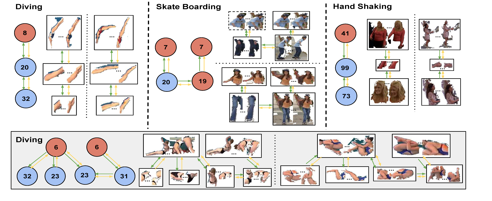

Space-Time Tree Ensemble For Action Recognition |
|  |
Human actions are, inherently, structured patterns of body movements. We explore ensembles of hierarchical spatio-temporal trees, discovered directly from training data, to model these structures for action recognition. The hierarchical spatio-temporal trees provide a robust mid-level representation for actions. However, discovery of frequent and discriminative tree structures is challenging due to the exponential search space, particularly if one allows partial matching. We address this by first building a concise action vocabulary via discriminative clustering. Using the action vocabulary we then utilize tree mining with subsequent tree clustering and ranking to select a compact set of highly discriminative tree patterns. We show that these tree patterns, alone, or in combination with shorter patterns (action words and pairwise patterns) achieve state-of-the-art performance on two challenging datasets: UCF Sports and HighFive. Moreover, trees learned on HighFive are used in recognizing two action classes in a different dataset, Hollywood3D, demonstrating the potential for cross-dataset generality of the trees our approach discovers. |
|
|
| Publication Shugao Ma, Leonid Sigal and Stan Sclaroff. "Space-Time Tree Ensemble for Action Recognition". In conference on Computer Vision and Pattern Recognition (CVPR), oral, 2015. [PDF] |
| Demo Video (with audio) |

|